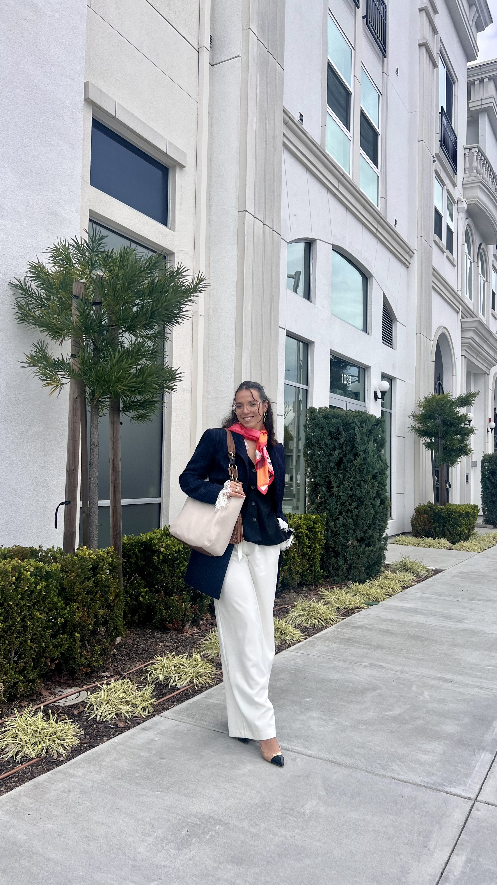

Business Student From Guadeloupe 🇫🇷
Bonjour! I'm Adelie, a creative and hardworking individual with a passion for blending technology, design, and human connection. As a lifelong learner, I thrive at the intersection of innovation and creativity, bringing bold ideas to life with determination and skill. ✨
Currently pursuing my master’s in Information Systems, I’m also proud to serve as the Vice President of Mentor
Santa Clara, CA | January 2025 - Present
Santa Clara, CA | January 2025 - Present
Menlo Park, CA | August 2023 - September 2023
Menlo Park, CA | February 2023 - August 2023
A fun and interactive quiz to test your knowledge of Game of Thrones quotes. Do you have what it takes to claim the Iron Throne of trivia?
A simple NLP-based tool to analyze stock market sentiment from news and Twitter and compare it with stock price trends.
Analyzes WHO data from 2010-2021 to uncover trends, disparities, and insights into the battle against NTDs in the Africa region.
Data-driven analysis of Airbnb listings to identify trends in profitability, neighborhood performance, and investment opportunities using Python.